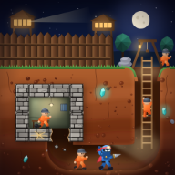

FREED Privacy Policy
Effective October 2, 2026
This policy explains how FREED (the "app"), a puzzle game for Android and iOS published by Mulhimfy ("we"), handles information. It applies to every version of the app on Google Play and the App Store.
Information we collect
None. The app does not ask for your name, email address, phone number, location, contacts, photos or any other personal information, and it does not send information about you or your device to us or to anyone else. The app contains no advertising, analytics, crash-reporting or social SDKs.
Information stored on your device
To remember your game, the app saves the following only on your device:
- your progress: completed levels, stars, records and achievements;
- the gear you unlocked and equipped;
- your settings, such as sound, music, vibration and reminders;
- the time of day you usually play, used only to time the optional daily reminder.
This data never leaves your device through the app. It is removed when you uninstall the app or clear its data. Your phone's own backup service (Google or iCloud backup) may include it in backups that you control; we have no access to those.
Notifications
On Android, FREED can show one optional daily mission reminder. It is scheduled locally on your device; no push server is involved and nothing is sent anywhere. You can turn reminders off in the game's settings or in your phone's notification settings at any time.
Permissions
- Notifications: to show the optional daily reminder (Android).
- Run at startup: to restore a scheduled reminder after your phone restarts (Android).
- Network access: a standard permission of the app's engine. FREED plays fully offline and does not use it to send any data.
Children
FREED is suitable for a general audience. Because the app collects no personal information from anyone, it collects none from children under 13 (or the minimum age in your country).
Third parties
We do not share data with third parties, because we do not collect any. Google Play and the App Store handle downloads and may collect information under their own privacy policies.
Your rights
Since we hold no personal data about you, there is nothing for us to access, correct or delete. You can delete everything the app saved by uninstalling it or clearing its data.
Changes to this policy
If this policy changes, the new version will be posted on this page with a new effective date.
Contact
Questions about this policy: ahmeddevyfy@gmail.com